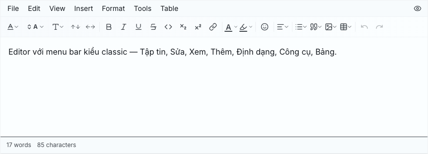
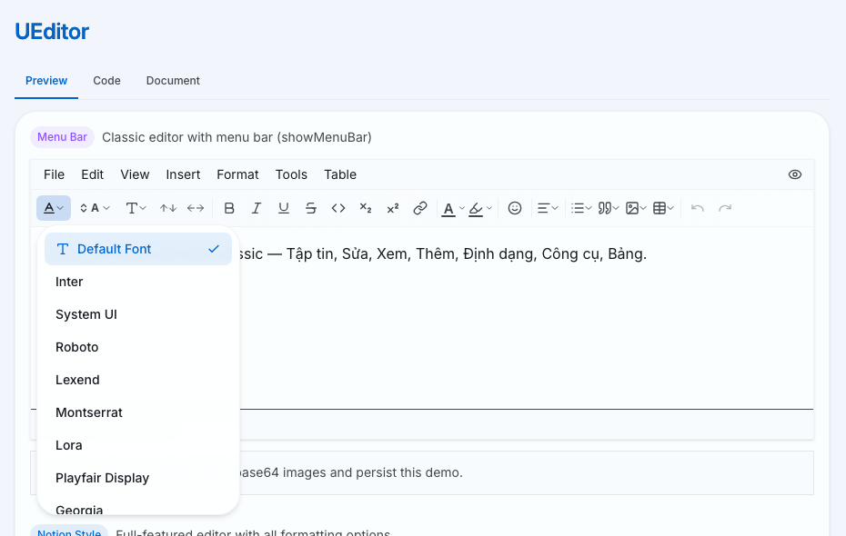
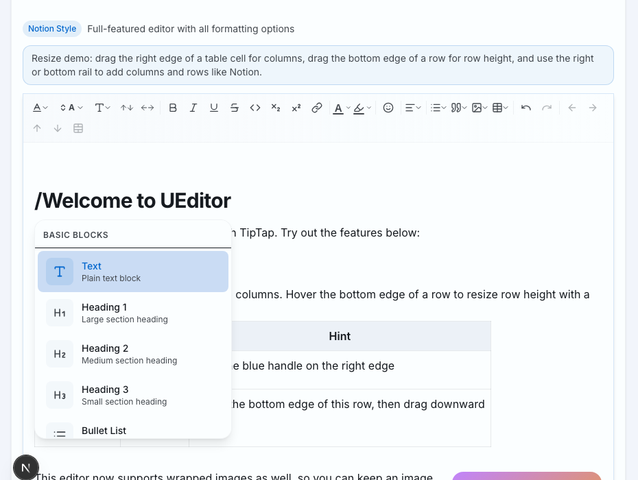
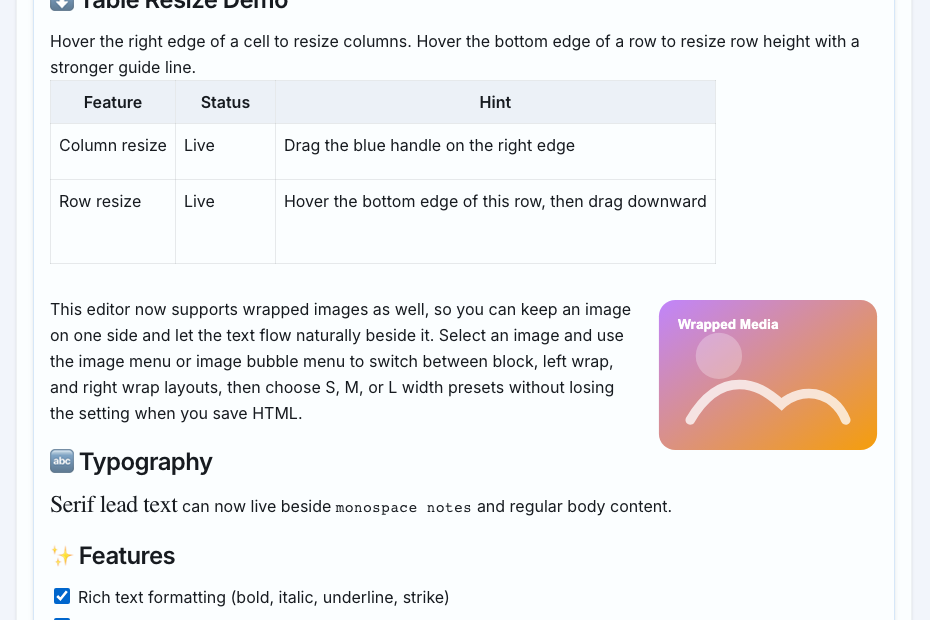
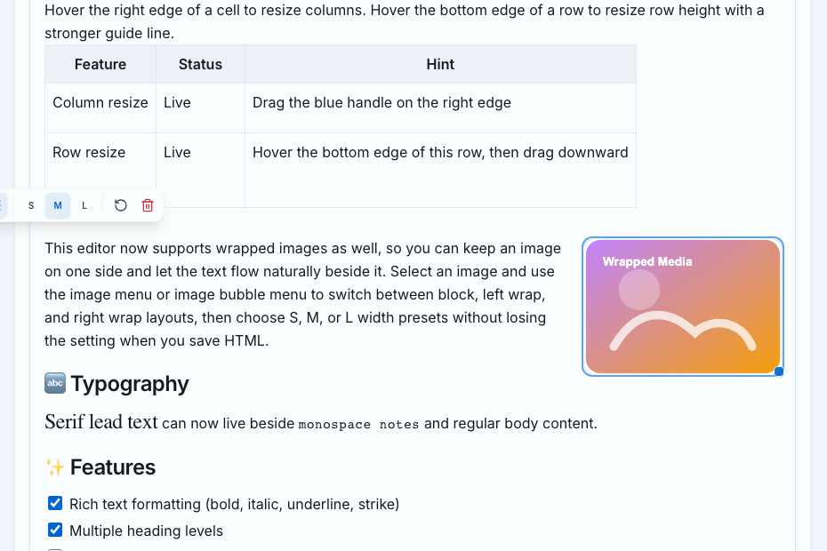
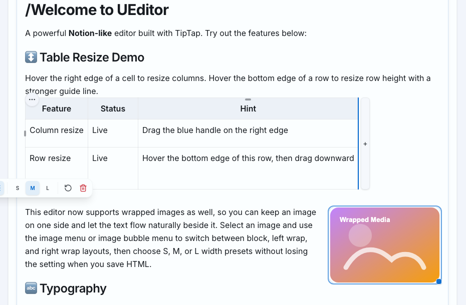
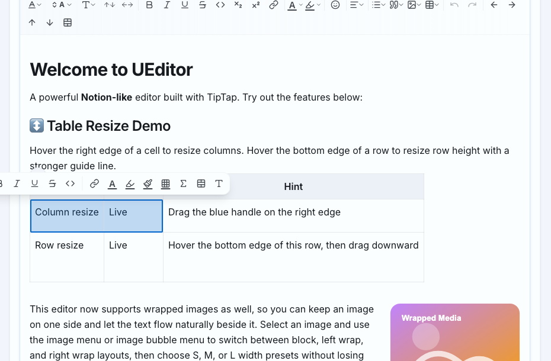
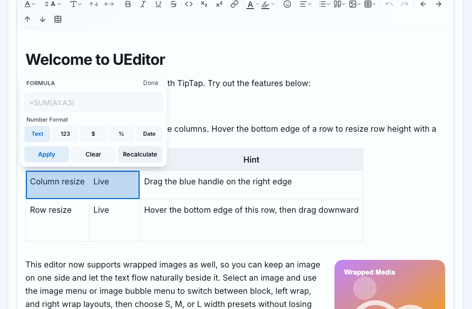

Trình soạn thảo văn bản phong phú trong Underverse UI
Tài liệu cập nhật theo implementation hiện tại của component UEditor
UEditor là rich-text editor dựa trên TipTap/ProseMirror. Người dùng có thể viết nội dung, định dạng chữ, chèn bảng, ảnh, liên kết, emoji, code block, callout, bookmark và tệp đính kèm ngay trong ứng dụng web.
UEditor phù hợp cho các màn hình cần soạn thảo nội dung dài như bài viết, mô tả sản phẩm, ghi chú nội bộ, tài liệu hướng dẫn, biên bản họp hoặc nội dung có bảng tính nhẹ. Người dùng không cần biết HTML; mọi thao tác chính đều có thể làm bằng toolbar, menu nổi hoặc slash command.
Component có ba kiểu hiển thị chính:
| Tình huống | Nên dùng | Lý do |
|---|---|---|
| Biểu mẫu nhập mô tả ngắn | variant="minimal" | Giao diện gọn, ít gây nhiễu. |
| Trang soạn thảo nội dung đầy đủ | variant="default" | Người dùng thấy ngay các nút định dạng chính. |
| Soạn tài liệu có bảng, ảnh, block linh hoạt | variant="notion" kết hợp cấu hình toolbar/menu phù hợp | Giữ cảm giác soạn thảo gọn hơn, còn slash command và bubble menu vẫn đến từ extension/prop tương ứng. |
| Xem trước nội dung đã lưu | editable=false | Hiển thị nội dung nhưng không cho chỉnh sửa. |
UEditor.tsx, toolbar.tsx, menus.tsx, menu-bar.tsx, slash-command.tsx và nhóm file bảng/công thức.Một editor thông thường gồm toolbar hoặc menu bar, vùng soạn thảo, bubble menu khi chọn nội dung, slash command khi gõ /, và footer đếm từ/ký tự nếu được bật.

A powerful Notion-like editor built with TipTap. Chọn text để mở bubble menu hoặc gõ / trên dòng trống để thêm block.
42 words · 281 characters
| Vùng | Xuất hiện khi nào | Dùng để làm gì |
|---|---|---|
| Menu bar | Khi bật showMenuBar | Thao tác theo nhóm File, Edit, View, Insert, Format, Tools, Table. |
| Toolbar | Khi showToolbar=true và editor editable | Định dạng nhanh text, block, ảnh, bảng, undo/redo. |
| Vùng soạn thảo | Luôn có trong editor | Nhập nội dung, chọn text, paste ảnh/bảng, kéo thả ảnh. |
| Bubble menu | Khi chọn text, link, ảnh hoặc ô bảng | Sửa nhanh đúng nội dung đang chọn. |
| Slash command | Khi gõ / | Chèn nhanh block như heading, list, table, callout, bookmark, file card. |
| Character count | Khi bật showCharacterCount | Theo dõi số từ/ký tự và giới hạn maxCharacters. |
/ để thêm block.Toolbar là nơi dùng nhanh các lệnh định dạng phổ biến. Một số nút là nút bấm trực tiếp, một số nút mở dropdown hoặc palette.
variant="minimal", toolbar không phải bản rút gọn của toàn bộ toolbar đầy đủ; code hiện chỉ render ba nút Bold, Italic và Bullet list. Nếu tài liệu end-user cần nhắc đến font, ảnh hoặc bảng thì nên dùng default/notion với showToolbar phù hợp.| Nhóm lệnh | Chức năng | Ghi chú thao tác |
|---|---|---|
| Typography | Phông chữ, cỡ chữ, kiểu đoạn, giãn dòng, giãn chữ | Hỗ trợ preset và có thể cấu hình bằng props fontFamilies, fontSizes, lineHeights, letterSpacings. |
| Inline style | Bold, italic, underline, strike, inline code, subscript, superscript | Áp dụng cho đoạn text đang chọn hoặc text nhập tiếp theo. |
| Màu sắc | Màu chữ và highlight | Chọn màu preset hoặc đưa về automatic/default. |
| Đoạn văn | Heading 1, Heading 2, Heading 3, paragraph, alignment | Alignment gồm left, center, right, justify. |
| Block | Bullet list, ordered list, task list, quote, code block | Task list có checkbox tương tác trong editor. |
| Insert | Link, emoji, image, table | Image có URL/upload; table có grid chọn kích thước. |
| History | Undo, redo | Nút bị disable khi không có lịch sử thao tác phù hợp. |

| Control | Ví dụ | Tác động |
|---|---|---|
| Font Family | Default Font, Inter, System UI, Roboto, Georgia... | Đổi phông chữ của text đang chọn thông qua mark textStyle. |
| Font Size | 14px, 16px, 24px hoặc nhập số trong panel bubble | Đổi cỡ chữ. Bubble menu giới hạn nhập trực tiếp khoảng 8-96px. |
| Text Style | Normal, Heading 1, Heading 2, Heading 3 | Đổi node đoạn hiện tại, không chỉ đổi kích thước chữ. |
| Line Height | 1.2, 1.5, 1.75 | Đổi độ giãn dòng của text. |
| Letter Spacing | 0, 0.05em... | Đổi khoảng cách chữ, hữu ích cho tiêu đề hoặc nhãn ngắn. |
[], [ ], - [], - [ ] và * [ ]. Nếu người dùng cần Heading 4-6 hoặc markdown shortcut khác thì phải mở rộng cấu hình code trước, không phải lỗi của tài liệu.Gõ / trong editor để mở danh sách khối. Có thể tiếp tục gõ để lọc, dùng mũi tên lên/xuống để chọn và nhấn Enter để chèn.

showFloatingMenu đang có trong type và CustomFloatingMenu đã được định nghĩa trong code, nhưng UEditor.tsx hiện chưa render component này. Trong bản hiện tại, hãy hướng dẫn người dùng dùng slash command bằng phím /; chỉ mô tả nút floating add-block nếu đội triển khai nối lại prop này./. Danh sách Basic Blocks sẽ mở ngay dưới con trỏ.table, quote, file để lọc danh sách.file ra File Attachment, nhưng gõ theo một từ chỉ nằm trong description có thể không ra kết quả.| Lệnh | Kết quả | Lưu ý |
|---|---|---|
| Text | Đoạn văn thường | Dùng để quay về paragraph sau heading/list. |
| Heading 1/2/3 | Tiêu đề cấp tương ứng | Phù hợp chia section nội dung. |
| Bullet / Numbered / To-do List | Danh sách dấu chấm, số hoặc checkbox | Task list checkbox có thể tick trực tiếp. |
| Quote / Code Block | Khối trích dẫn hoặc khối mã | Code block dùng lowlight để tô cú pháp. |
| Divider | Đường phân cách ngang | Dùng tách các phần nội dung dài. |
| Table | Bảng 3×3 có header row | Có thể chỉnh tiếp bằng table controls. |
| Callout | Hộp chú thích nổi bật | Node view có nút đổi emoji và swatch màu nền Gray, Blue, Green, Yellow, Red. |
| Bookmark Card | Thẻ preview link | Lệnh hiện dùng prompt nhập URL; có thể lấy metadata nếu app truyền fetchMetadata. |
| File Attachment | Thẻ tệp đính kèm | Lệnh mở file picker, chèn data URL trước; FileCardView sẽ upload nếu có uploadFile. |
Ngoài emoji picker trên toolbar, UEditor hiện bật EmojiSuggestion. Khi gõ :, editor mở lưới emoji gợi ý; người dùng có thể gõ tiếp tên emoji để lọc, dùng phím mũi tên để di chuyển và nhấn Enter để chèn.
EMOJI_LIST.Khi bôi đen text hoặc chọn một node đặc biệt, bubble menu nổi phía trên vùng chọn. Menu này giúp chỉnh nhanh mà không cần di chuyển lên toolbar.

Ví dụ: đoạn text đang được chọn có thể đổi màu, tạo link, bật bold/italic hoặc mở panel typography.
Với link, bubble menu chuyển sang chế độ preview: hiển thị URL, nút mở tab mới, sửa link và gỡ link. Với ảnh, bubble menu hiển thị layout block/left/right, kích thước S/M/L, reset size và xóa ảnh.
| Đang chọn | Menu hiển thị | Thao tác chính |
|---|---|---|
| Text thường | Bold, italic, underline, strike, code, link, màu chữ, highlight, typography | Định dạng nhanh nội dung đang chọn. |
| Link | URL preview, open, edit, unlink | Mở link, sửa URL hoặc gỡ link khỏi text. |
| Ảnh | Block/left/right layout, S/M/L, reset, delete | Chỉnh vị trí ảnh, kích thước preset hoặc xóa ảnh. |
| Ô bảng | Cell background, cell border, formula, merge/split, typography | Định dạng bảng và nhập công thức theo ô. Border có style, width, color và clear border. |
Panel typography trong bubble menu cho phép nhập font size trực tiếp trong khoảng 8-96px, chọn nhanh 14/16/24px, chọn line-height nhanh 1.2/1.5/1.75 và bật subscript/superscript. Khi selection nằm trong bảng, panel border hỗ trợ Solid, Dashed, Dotted, Double, None; width 1-4px; palette màu và nút xóa border.
Chọn text rồi bấm nút link để nhập URL. UEditor chỉ cho phép protocol an toàn như http, https, mailto, tel hoặc relative URL; URL nguy hiểm như javascript: và protocol-relative URL dạng //example.com bị từ chối.
https://....Ảnh có thể chèn từ URL, upload từ máy, paste hoặc kéo thả. Mặc định ảnh được giữ dạng base64 khi đang soạn thảo; khi lưu có thể gọi prepareContentForSave() để upload base64 thành URL thật.

Wrapped image: chọn ảnh rồi dùng menu ảnh để chuyển giữa Image Block, Wrap Text Right và Wrap Text Left. Có thể chọn width Small, Medium, Large, reset size hoặc xóa ảnh.
Trên mobile, ảnh wrap được đưa về block để tránh text bị bó hẹp.
| Cách chèn ảnh | Luồng xử lý | Khi nào dùng |
|---|---|---|
| Thêm từ URL | Editor kiểm tra URL ảnh an toàn rồi chèn <img>. Hỗ trợ http, https, relative URL và data image; chặn protocol-relative URL. | Khi ảnh đã có URL công khai hoặc CDN. |
| Upload từ máy | Nếu imageInsertMode="upload" và có uploadImage, upload ngay; nếu không, giữ data URL. | Khi app muốn ảnh xuất hiện ngay trong editor. |
| Paste / drag-drop | Extension ClipboardImages xử lý file ảnh, kiểm tra size/MIME và insert theo mode. Mặc định giới hạn 10MB và MIME png, jpeg, webp, gif, svg+xml. | Khi người dùng copy ảnh từ clipboard hoặc kéo file vào editor. |
| Upload khi lưu | prepareContentForSave() tìm ảnh base64, chuyển thành File, gọi uploadImageForSave. | Khuyến nghị cho editor dài để tránh upload rác khi người dùng chưa lưu. |
Ảnh còn có handle resize ở góc dưới phải. Khi kéo, editor giữ tỷ lệ ảnh, giới hạn tối thiểu khoảng 40px và không cho vượt quá vùng editor. Width/height được lưu vào node; reset size sẽ xóa kích thước custom và preset size. Preset hiện tại: ảnh block S/M/L khoảng 180/280/380px; ảnh wrap trái/phải S/M/L khoảng 140/200/260px.
Slash command có Bookmark Card để nhúng link dạng thẻ preview. Lệnh bookmark hiện dùng prompt nhập URL đơn giản; sau khi chèn, nếu truyền fetchMetadata, bookmark có thể hiển thị title, description, image hoặc publisher. Nếu paste một URL http/https thuần vào đoạn paragraph đang trống, extension bookmark có thể tự chuyển đoạn đó thành bookmark card.
File Attachment mở file picker, tạo thẻ tệp bằng data URL. File card hiển thị icon theo MIME phổ biến như PDF, image, audio, video hoặc generic, hiển thị tên file/kích thước, có nút download và trạng thái upload/retry. Upload ngay sau khi chèn dùng thứ tự handler trong code: uploadFile trước, sau đó có thể fallback qua upload save-time wrapper hoặc uploadImage tùy cấu hình hiện có.
Có ba cách tạo bảng:
/table để chèn nhanh bảng 3×3 có header row.
Grid chèn bảng
Preview: Insert 3×4 Table
Điều khiển bảng kiểu Notion
+ column + row ⋯ table ⋮ row ⋯ columnHover vào bảng để mở rail thêm hàng/cột, handle kéo row/column để đổi thứ tự và menu điều khiển.
| Vị trí | Lệnh |
|---|---|
| Toolbar / table controls | Align table left/center/right, add column before/after, add row before/after, toggle header row/column, delete row/column/table. |
| Menu bar Table | Insert table, delete table, add/delete row, add/delete column, merge/split cell. Table Properties có trong menu nhưng đang disabled. |
| Bubble menu trong bảng | Màu nền ô, border ô, border style/width/color, công thức, merge/split cells và typography. |
| Menu hàng/cột | Add before/after, duplicate row/column, clear contents, delete row/column. |
| Resize | Kéo cạnh phải của cột để đổi width, kéo cạnh dưới của hàng để đổi row height. Khi editable=false, resize bị tắt. |
| Reorder | Kéo handle hàng hoặc cột để đổi thứ tự hàng/cột trong cùng bảng. |
| Hành động | Chi tiết hành vi |
|---|---|
| Align table | Đặt thuộc tính căn bảng trái/giữa/phải. Bảng có data-table-align sẽ dùng width vừa nội dung và căn theo thuộc tính. |
| Header row/column | Chuyển hàng/cột thành header hoặc bỏ header bằng lệnh toggle. |
| Duplicate row/column | Menu handle hàng/cột có thể nhân đôi cấu trúc và nội dung vùng tương ứng. |
| Clear row/column contents | Xóa nội dung bên trong nhưng giữ cấu trúc hàng/cột. |
| Reorder row/column | Kéo handle hàng/cột; editor dùng logic moveTableRow/moveTableColumn để chuyển vị trí. |
| Delete table | Xóa toàn bộ table node khỏi document. |

UEditor hỗ trợ công thức bảng ở mức lightweight spreadsheet. Có thể nhập công thức trực tiếp trong ô hoặc dùng nút Σ Formula trong bubble menu khi con trỏ ở trong bảng.

| A | B | C |
|---|---|---|
| 10 | 20 | =SUM(A1:B1) |
| 5 | 15 | 20 |
Formula panel: =SUM(A1:B2) · Format: Text / 123 / $ / % / Date · Apply · Clear · Recalculate | ||
= rồi nhập công thức, ví dụ =SUM(A1:B3).=; editor sẽ tự chuẩn hóa thành công thức có =.| Loại | Ví dụ | Ý nghĩa |
|---|---|---|
| Tham chiếu ô | =A1+B1 | Lấy giá trị từ ô A1 và B1 trong cùng bảng. |
| Vùng ô | =SUM(A1:B3) | Tính trên toàn bộ vùng từ A1 đến B3. |
| Hàm | SUM, AVG, MIN, MAX, COUNT | COUNT đếm ô có thể đọc thành số. |
| Toán tử | +, -, *, / | Có hỗ trợ ngoặc đơn. |
| Định dạng số | Number, Currency, Percent, Date | Giá trị tính được được hiển thị theo format đã chọn. |
Công thức hiện chỉ xử lý biểu thức số nhẹ: số nguyên/thập phân, toán tử, ngoặc, tham chiếu ô/vùng và các hàm đã liệt kê. Format Currency dùng USD, Percent nhân giá trị theo định dạng phần trăm, còn Date đọc số serial theo mốc tương tự Excel là 1899-12-30. Editor chưa phải spreadsheet đầy đủ nên không nên hứa các hàm text/date nâng cao.
Địa chỉ ô dùng quy ước giống spreadsheet: cột là chữ cái bắt đầu từ A, hàng là số bắt đầu từ 1. Ví dụ ô đầu tiên là A1, ô bên phải là B1, ô ở hàng thứ hai cột A là A2. Vùng A1:C3 bao gồm tất cả ô từ cột A đến C và hàng 1 đến 3.
| Công thức | Dữ liệu ví dụ | Kết quả mong đợi |
|---|---|---|
=SUM(A1:A3) | A1=10, A2=20, A3=5 | 35 |
=AVG(B1:B3) | B1=6, B2=9, B3=12 | 9 |
=MIN(A1:C1) | 10, 4, 7 | 4 |
=MAX(A1:C1) | 10, 4, 7 | 10 |
=COUNT(A1:A5) | 3 số, 2 ô text | 3 |
=(A1+B1)/C1 | A1=10, B1=20, C1=5 | 6 |
=SUM( rồi kéo chọn vùng ô trong bảng; editor sẽ highlight vùng đang chọn để điền range. Công thức nháp chưa đủ cú pháp sẽ chưa được promote thành formula chính thức. Công thức được tự tính lại khi nội dung bảng thay đổi, khi selection đổi, khi editor blur và khi content controlled được set lại.#INVALID-REFERENCE, #INVALID-FORMULA, #DIVISION-BY-ZERO, #CIRCULAR-REFERENCE. Nếu thấy lỗi vòng lặp, kiểm tra ô đang tham chiếu lại chính nó hoặc tham chiếu thành chuỗi vòng.| Lỗi | Nguyên nhân thường gặp | Cách xử lý |
|---|---|---|
#EMPTY | Công thức rỗng hoặc chưa đủ dữ liệu để tính | Nhập công thức đầy đủ hoặc clear công thức khỏi ô. |
#INVALID-REFERENCE | Tham chiếu ra ngoài bảng hoặc sai địa chỉ ô | Kiểm tra lại A1, B2, vùng A1:B3. |
#INVALID-FORMULA | Sai cú pháp, thiếu ngoặc, toán tử không hợp lệ | Sửa công thức theo cú pháp hỗ trợ. |
#DIVISION-BY-ZERO | Chia cho 0 | Đổi mẫu số hoặc kiểm tra dữ liệu nguồn. |
#CIRCULAR-REFERENCE | Ô A tham chiếu ô B và ô B tham chiếu ngược lại ô A | Gỡ một trong các tham chiếu tạo vòng. |
Khi bật showMenuBar, editor có menu giống ứng dụng soạn thảo truyền thống.
File > Save chỉ hoạt động khi app truyền onSave. Menu item hiển thị shortcut Ctrl+S, nhưng UEditor hiện chưa tự bind phím này; app cần bắt keyboard event nếu muốn lưu bằng bàn phím. File > Export HTML gọi onExport nếu có; nếu không, editor tự tải file document.html. View > Source Code dùng callback nếu có, nếu không mở dialog built-in cho sửa HTML rồi Apply.
View > Preview và nút biểu tượng mắt gọi onPreview(editor.getHTML()). Nếu callback trả về false, dialog preview built-in sẽ không mở; nếu không trả về false, editor mở dialog preview. Preview built-in chạy qua prepareUEditorPreviewHtml() để chuẩn hóa lại width/height bảng trong HTML preview.
| Menu | Lệnh chi tiết | Ghi chú |
|---|---|---|
| File | Save, Export HTML | Save phụ thuộc onSave; Export có fallback tải file HTML. |
| Edit | Undo, Redo, Cut, Copy, Paste, Paste as Text, Select All | Một số lệnh clipboard phụ thuộc quyền của trình duyệt. |
| View | Source Code, Preview, Fullscreen | Source/Preview có dialog built-in nếu không truyền callback; source dialog cho phép sửa HTML rồi Apply. |
| Insert | Image URL, Image Upload, Link, Table, Horizontal Rule | Image upload tuân theo size/MIME và insert mode. |
| Format | Bold, Italic, Underline, Strike, Superscript, Subscript, Code, Wrap, Align, Clear Formatting | Wrap gồm paragraph, heading, blockquote, code block, task list. |
| Tools | Source Code | Shortcut menu cho thao tác xem/sửa HTML. |
| Table | Insert Table, Table Properties, Delete Table, Row, Column, Cell merge/split | Các lệnh row/column/cell chỉ bật khi selection nằm trong bảng; Table Properties đang disabled. |
Thông thường app lấy HTML qua onChange/onHtmlChange. Nếu nội dung có ảnh base64 hoặc file card inline, nên gọi prepareContentForSave() qua ref trước khi lưu.
const prepared = await editorRef.current?.prepareContentForSave({ throwOnError: true })
await api.savePost({ content: prepared?.html ?? "" })Kết quả trả về gồm HTML đã chuẩn hóa, danh sách item đã upload, inline image URLs và lỗi upload nếu có. uploadImageConcurrency mặc định là 3 và được dùng để giới hạn upload song song khi chuẩn bị lưu.
prepareContentForSave({ throwOnError: true }).throwOnError=true, bắt exception để báo người dùng lưu thất bại hoặc yêu cầu thử lại.| Field trong kết quả | Ý nghĩa |
|---|---|
html | HTML cuối cùng nên dùng để lưu. |
uploaded | Danh sách ảnh/file card đã upload thành công cùng URL/meta. |
inlineImageUrls | URL ảnh inline đã được phát hiện trong nội dung. |
inlineUploaded | Danh sách ảnh inline base64 đã upload, kèm index và thông tin file nếu có. |
errors | Lỗi upload theo index. Nếu không bật throw, app tự xử lý danh sách này. |
Handler upload khi lưu có thể trả về URL string hoặc object có dạng { url, ...meta }. Ảnh base64 cần uploadImageForSave. File card data URL dùng uploadFileForSave nếu có, nếu không fallback sang uploadImageForSave.
Khi dùng menu bar, File > Export HTML sẽ gọi onExport nếu app truyền callback. Nếu không có callback, editor tạo một Blob HTML đơn giản và tải về file document.html. Đây là export nhanh cho người dùng, không thay thế logic lưu chính thức của app.
Khi editable=false, người dùng không sửa được nội dung; toolbar và resize table không còn tác dụng. Link trong read-only có thể mở tab mới khi click nếu selection đang rỗng.
| Phím | Chức năng |
|---|---|
| Ctrl/Cmd+B | In đậm |
| Ctrl/Cmd+I | In nghiêng |
| Ctrl/Cmd+U | Gạch chân |
| Ctrl/Cmd+Z | Hoàn tác |
| Ctrl/Cmd+Y hoặc Cmd+Shift+Z | Làm lại, tùy nền tảng/browser |
| Ctrl/Cmd+S | UEditor chỉ hiển thị shortcut trên menu Save; app cần tự bắt phím để gọi onSave. |
| / | Mở slash command |
| ↑/↓ + Enter | Di chuyển và chọn item trong slash command |
| : | Mở emoji autocomplete. |
showToolbar, editable và variant đang dùng.maxImageFileSize, allowedImageMimeTypes, fallbackToDataUrl, uploadImage và uploadImageForSave.//example.com không được chấp nhận.editable=false không.| Hiện tượng | Nguyên nhân có thể | Cách kiểm tra |
|---|---|---|
Không thấy slash command khi gõ / | Editor không focus, đang read-only, hoặc extension bị override | Click lại vào vùng editor, kiểm tra editable và extraExtensions. |
Không thấy floating add-block dù truyền showFloatingMenu | Prop hiện được khai báo nhưng chưa được render trong UEditor.tsx | Dùng slash command, hoặc nối CustomFloatingMenu vào component trước khi bật tài liệu tính năng này cho end-user. |
| Bubble menu biến mất khi nhập link/formula | Focus bị chuyển ra ngoài hoặc custom wrapper chặn event | Kiểm tra popover/modal parent có đóng khi click bên trong không. |
| Ảnh không chèn được | Sai MIME, file quá lớn, URL không an toàn, upload handler lỗi | Kiểm tra console/API response và props image. |
| Kéo thả file thường không tạo file card | ClipboardImages chỉ xử lý image file cho paste/drag-drop | Dùng slash command File Attachment để chèn file card. |
| Bookmark không tự tạo khi paste URL | URL không phải http/https, paragraph không trống, hoặc paste chứa nhiều nội dung | Thử paste một URL thuần vào dòng trống hoặc dùng slash command Bookmark Card. |
| File card upload lỗi | Thiếu handler upload, API trả lỗi hoặc data URL không upload được | Kiểm tra trạng thái lỗi trên card, bấm retry hoặc gọi prepare save-time với handler phù hợp. |
| Paste bảng bị lệch | Nguồn clipboard có HTML table phức tạp | Dán lại dưới dạng plain text hoặc chỉnh lại bằng table controls. |
| Code block không tô màu như mong đợi | Ngôn ngữ không nằm trong lowlight common hoặc không nhận diện | Kiểm tra nội dung code block và extension lowlight. |
| Bộ đếm ký tự không giới hạn nhập | maxCharacters chưa truyền hoặc chỉ dùng count hiển thị | Kiểm tra prop maxCharacters và behavior CharacterCount. |
| Preview bảng khác nội dung thô | Built-in preview chuẩn hóa lại width/height bảng | Đây là behavior của prepareUEditorPreviewHtml(); export fallback vẫn là HTML đơn giản từ editor. |
Các props thường dùng nhất:
| Prop | Mục đích | Mặc định |
|---|---|---|
content | HTML ban đầu hoặc HTML controlled | "" |
onChange, onHtmlChange, onJsonChange | Lấy nội dung HTML/JSON khi editor update | - |
placeholder | Text gợi ý khi editor trống | Theo translation hoặc fallback mặc định |
variant | default, minimal, notion. Lưu ý notion hiện chủ yếu là biến thể style, không tự tắt toolbar/menu. | default |
showMenuBar | Bật menu bar File/Edit/View/Insert/Format/Tools/Table | false |
showToolbar | Bật toolbar khi editable; minimal toolbar chỉ có Bold/Italic/Bullet list | true |
showBubbleMenu | Bật menu nổi khi chọn text/link/ảnh/ô bảng | true |
showFloatingMenu | Prop đã khai báo nhưng UEditor hiện chưa render CustomFloatingMenu | Chưa có tác dụng trong component chính |
editable | Cho phép sửa nội dung | true |
autofocus | Tự focus editor khi mount | false |
minHeight, maxHeight | Giới hạn chiều cao vùng editor | 200px, auto |
showCharacterCount, maxCharacters | Hiển thị word/character count và giới hạn ký tự nếu truyền max | false, không giới hạn |
uploadImage, imageInsertMode | Upload ảnh ngay khi chèn nếu dùng mode upload | base64 |
maxImageFileSize, allowedImageMimeTypes, fallbackToDataUrl | Giới hạn paste/upload ảnh và quyết định có fallback data URL khi upload lỗi không | 10MB, MIME ảnh phổ biến, true |
uploadImageForSave, uploadFileForSave, uploadImageConcurrency | Upload ảnh/tệp inline khi chuẩn bị lưu và giới hạn upload song song | Concurrency 3 |
uploadFile | Upload file card ngay sau khi chèn nếu có handler | - |
fetchMetadata | Lấy metadata cho bookmark card | - |
onSave, onExport, onSourceCode, onPreview | Callback cho menu bar; onPreview nhận HTML hiện tại và có thể trả false để chặn preview dialog built-in | - |
extraExtensions | Gắn thêm TipTap extensions tùy biến | [] |
<UEditor
ref={editorRef}
content={content}
onChange={setContent}
variant="notion"
showToolbar={false}
showBubbleMenu
showCharacterCount
maxCharacters={5000}
imageInsertMode="base64"
uploadImageForSave={uploadImageForSave}
uploadFileForSave={uploadFileForSave}
uploadFile={uploadFile}
fetchMetadata={fetchBookmarkMetadata}
onPreview={(html) => {
openPreview(html)
return false
}}
fontFamilies={customFontFamilies}
fontSizes={customFontSizes}
lineHeights={customLineHeights}
letterSpacings={customLetterSpacings}
/>node docs/underverseui-usage/generate-pdf.mjs để xuất lại PDF.